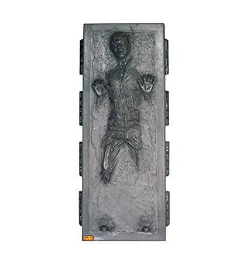
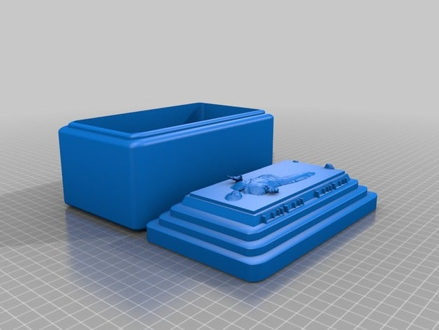
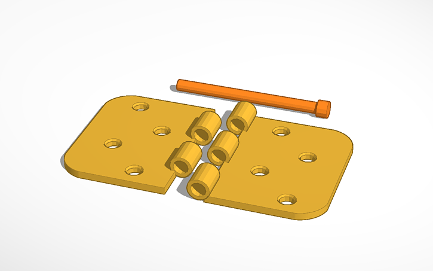
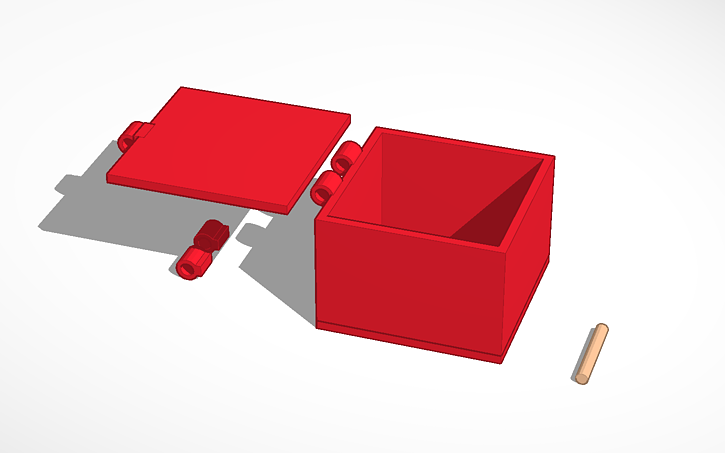
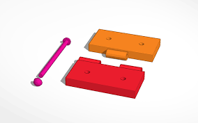
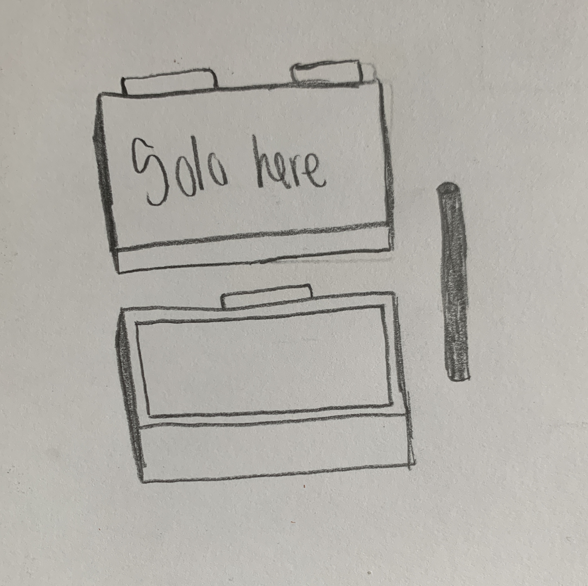

Concept:
For my final project I want to create a hinged Han Solo in carbonite box. This box can be used to hold trinkets or other things, and it'll be cool to look at.
     
- CAD Modelling: create the box in OnShape
- 3D Printing: send the box to the printer
- Lasercut: use the lasercutter to cut out the wood or acrylic
- Moving Parts: use the lasercut piece to attach the box together
- May 30th: Finish the box, possibly start 3D printing (time permitting)
- June 1st: 3D print if not done, or if need 3D print again
- June 2nd: Lasercut, also work on assembling pieces, add any finishing if needed (also if 3D print doesn’t work, lasercut the box)
- June 3rd: work on documentation
- June 4th: make any final changes to documentation and submit
- June 5th: present in class What could possibly go wrong? In case things go awry, I have a back up plan. I will lasercut the box base and 3D print only the lid. With this the box would no longer be hinged but you would still be able to move it by lifting the top off.
- Filament: will obtain from the Mill or Fluke (pay as needed)
- Acrylic: already own from previous project
- If it comes to light I need something else I will purchase from Amazon or the Mill